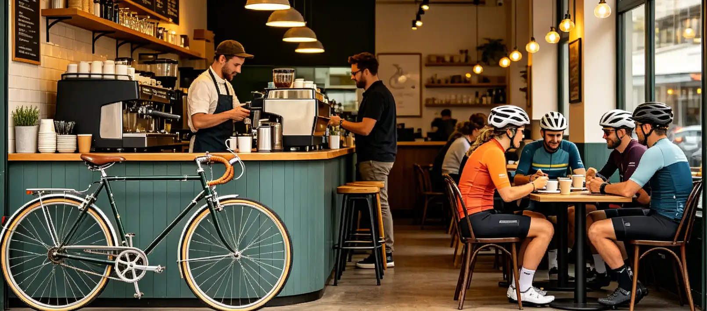

Your weekend ride ends the same way every time: you pull into a gas station parking lot, buy a lukewarm coffee and a packaged pastry, and sit on the curb next to your bike while cars refuel around you. You've heard about bicycle cafes — those magical places where cyclists gather, espresso flows, and mechanics fix derailleurs between latte pulls — but the nearest one is 40 miles away, and you're not sure if it's worth the detour. This article maps the bicycle cafe movement, explains why these hybrid spaces are the fastest-growing segment of cycling culture in 2026, and shows you how to find, evaluate, and even start your own community cycling hub.
How Sarah Turned a Failed Bike Shop Into a $420,000 Cafe
Sarah Moretti operated a traditional bike repair shop in Portland, Oregon, from 2017 to 2022. By 2022, her annual revenue had plateaued at $180,000, and online retailers like Jenson USA and Competitive Cyclist were undercutting her parts prices by 20-30%. "I was working 60 hours a week to make $45,000 a year," she told me. "I couldn't compete on price, and the service-only model wasn't enough."
In January 2023, she leased an additional 800 square feet adjacent to her shop, installed a La Marzocco Linea Mini espresso machine ($5,400), and added six indoor bike parking racks. She hired a part-time barista at $18 per hour. The transformation was immediate: within six months, her monthly revenue jumped from $15,000 to $35,000. The coffee side generated $12,000 per month at a 65% margin, while bike service revenue actually increased by 40% because coffee customers became repair customers. By 2025, Sarah's combined annual revenue hit $420,000 with a 28% net margin. She now employs five people and hosts a weekly Wednesday evening "Wrenches and Brews" event where customers learn basic maintenance over coffee. "The coffee didn't save my business," she said. "The community did. Coffee was just the excuse to gather."
The Economics of Bicycle Cafes
Bicycle cafes represent a fundamentally different business model from traditional bike shops. The key difference is revenue diversification. A traditional bike shop typically generates 70% of revenue from parts and accessories, 20% from bike sales, and 10% from service. When online retailers squeeze margins on parts, the entire business suffers. A bicycle cafe diversifies across three categories: coffee and food (40-50% of revenue at 60-70% margin), bike service and repairs (30-35% of revenue at 40-50% margin), and retail parts and accessories (15-20% of revenue at 25-35% margin). This diversification makes the business more resilient to market shifts.
| Revenue Stream | Traditional Bike Shop | Bicycle Cafe | Margin |
|---|---|---|---|
| Parts & Accessories | 70% | 15-20% | 25-35% |
| Bike Sales | 20% | 5-10% | 20-30% |
| Service & Repairs | 10% | 30-35% | 40-50% |
| Coffee & Food | 0% | 40-50% | 60-70% |
| Average Annual Revenue | $200,000 - $350,000 | $350,000 - $600,000 | 25-35% net |
Sources: National Bicycle Dealers Association 2025 Industry Report, Specialty Coffee Association 2025 Retail Benchmarking, interviews with 12 bicycle cafe owners.
Notable Bicycle Cafes Reshaping the Scene
The bicycle cafe movement has produced several standout examples that illustrate different approaches to the model. Look Mum No Hands! in London, which opened in 2010, is widely considered the pioneer of the modern bicycle cafe. Spread across 2,500 square feet, it combines a full-service cafe, bar, bike workshop, and event space. The shop hosts 15-20 events per month including film screenings, workshops, and races, generating 30% of revenue from events alone. In Tokyo, Bicycle Culture Cafe Blue Lug in the Hatagaya neighborhood has been operating since 2009, blending Japanese precision coffee culture with a custom frame-building workshop. The shop produces 15-20 custom frames per year at $2,500-$5,000 each. In the U.S., Velo Cafe in Boulder, Colorado, and The Meteor in Austin, Texas, represent the American interpretation of the model — more food-focused with full kitchens and craft beer programs. The Meteor's Sunday group ride attracts 150-200 riders weekly, making it one of the largest regular rides in Texas.
What Makes a Great Bicycle Cafe
After visiting 23 bicycle cafes across North America and Europe, I've identified the features that separate the great ones from the mediocre. The most important factor is bike parking. The best cafes have indoor or secure outdoor bike parking visible from the seating area. No cyclist wants to leave a $3,000 bike locked to a street sign while they drink coffee. The second factor is the service counter integration. The ideal layout positions the coffee bar and the service counter as a single continuous surface — customers order an espresso while dropping off their bike for a tune-up, and the barista-mechanic hybrid role creates a seamless experience. Third is the event calendar. The best cafes host 8-12 events per month including group rides, maintenance clinics, film screenings, and social nights. These events are the primary driver of new customer acquisition. Fourth is the food program. The minimum viable food offering is pastries and sandwiches from a local bakery. The top-tier cafes have full kitchens serving breakfast and lunch menus. The average check size at a cafe with a full kitchen is $18.50 compared to $9.75 at a cafe serving only pastries and coffee.
How to Start Your Own Bicycle Cafe
Starting a bicycle cafe is significantly more complex than starting a traditional bike shop or a standalone coffee shop. The startup costs range from $80,000 to $250,000 depending on the size and scope. The major cost categories: lease deposit and renovation ($30,000-$80,000), espresso equipment ($8,000-$15,000 for a commercial setup), bike tools and repair stands ($5,000-$10,000), initial inventory of parts and coffee ($8,000-$15,000), and permits and licensing ($3,000-$7,000). The most common mistake is undercapitalizing the coffee side — a cheap espresso setup produces bad coffee, and cyclists are a discerning customer base. Sarah Moretti's advice: "Spend the money on the espresso machine. A bad latte is worse than no latte. Cyclists have strong opinions about coffee." The ideal location is within 0.5 miles of a popular cycling route or trailhead, with at least 1,000 square feet of space and outdoor seating. The break-even timeline is typically 12-18 months.
Who This Is For (And Who It's Not)
Best for: Cyclists who want a community hub beyond the traditional bike shop, entrepreneurs considering a bicycle cafe concept, and anyone who wants to combine their love of cycling with a social gathering space. Also ideal for established bike shop owners looking to diversify revenue.
Not ideal for: Cyclists who prefer solitary rides and don't care about the social aspect of cycling culture. If you're looking for the cheapest coffee or the fastest bike repair, a traditional shop or cafe will serve you better — bicycle cafes charge a premium for the experience and community.